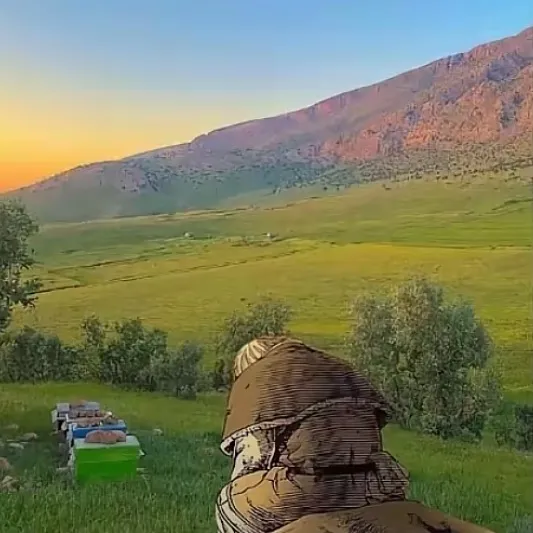
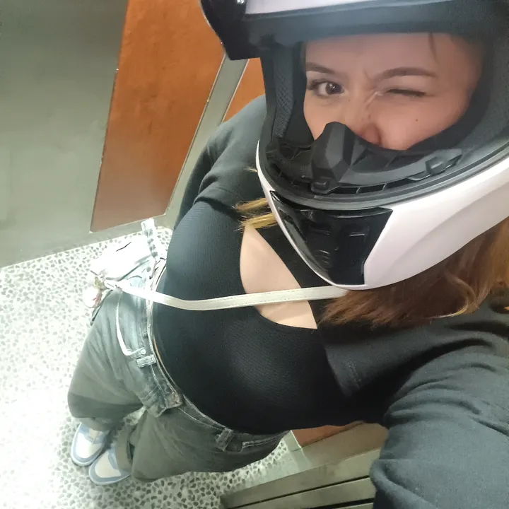

TikTok Profile Analytics Checker
Enter a TikTok username to fetch followers, bio, verified status and avatar. We also estimate engagement rate from recent posts.
About this tool
This checker retrieves public profile data via a scraping actor to display core metrics and a quick engagement estimate from recent videos.
Recently analyzed
@rose.patel_122
ER 0.00% • 22 followers
@ilogiloo
ER 4.69% • 1,842 followers
@emilemax.26
ER 2.18% • 91 followers
@lr.visual6
ER 3.41% • 2 followers
@xkimnis
ER 8.95% • 513 followers
@klooak_ss
ER 16.80% • 33 followers
@losttokryzen
ER 4.64% • 777 followers
@tannerqs
ER 0.72% • 377 followers

@by_lucas12
ER 6.13% • 9 followers
@udonrentinoisiine
ER 0.00% • 0 followers
@capetola_divins
ER 2.02% • 9,564 followers

@iremgns03
ER 0.00% • 25 followers
Which metrics matter?
- Followers — Audience size. A baseline for benchmarking growth and reach.
- Engagement rate — Interaction via likes, comments, and shares relative to views.
- Total videos — Posting volume. More posts usually improve discovery and learning.
- Total likes — Cumulative appreciation; use alongside engagement rate.
Good engagement — how to read it?
| Tier | Range | Interpretation |
|---|---|---|
| Very low | < 1% | Content likely not resonating; revisit hooks and topics. |
| Low | 1–3% | Basic traction; improve pacing, headline clarity, and relevance. |
| Good | 3–5% | Healthy engagement; double down on proven formats. |
| Strong | 5–8% | High resonance; expand series and collabs. |
| Excellent | > 8% | Standout performance; consider scaling and cross-platform. |
Pros & cons
Trade-offs
- −Dependent on public data
- −ER sample uses a limited recent window
Benefits
- ✓Fast profile overview
- ✓Simple engagement estimate
- ✓No login required for public accounts
How to improve your metrics
Nail the first 2 seconds. Start with a clear visual hook and explicit promise in caption.
Iterate on winners. Turn top posts into series; keep framing and pacing consistent.
Invite interactions. Ask a specific question and react to early comments to keep the loop warm.
Optimize timing. Post when your audience is active; experiment, then commit.
Explore More Free Tools
Powerful utilities to boost your growth